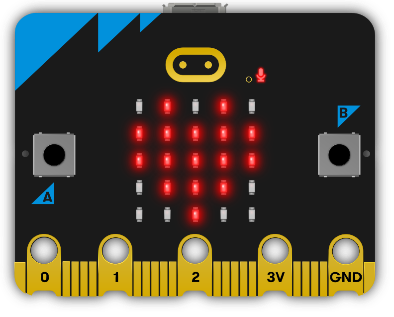
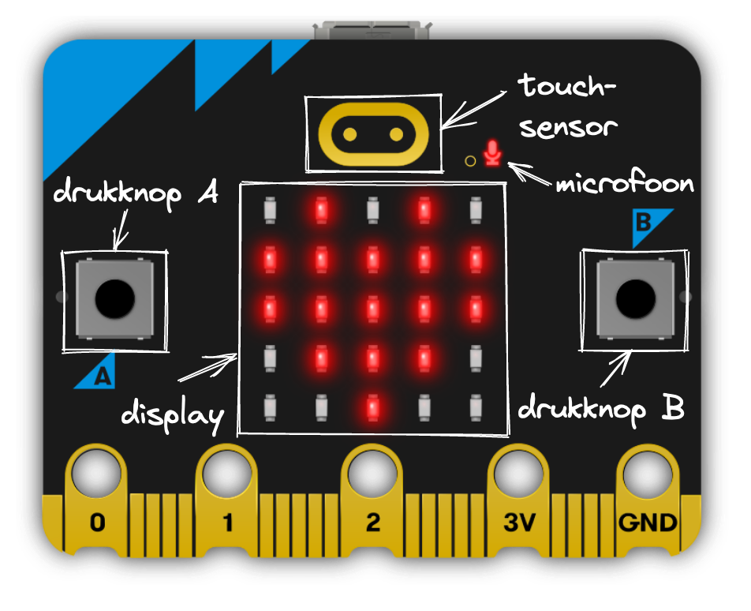
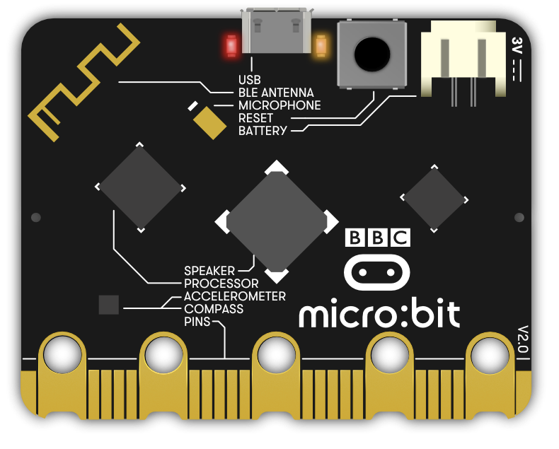

Leer de microbit kennen
Contents
1. Leer de microbit kennen#
wat is een microbit?
wat kun je er mee?
{kind=link}

Fig. 1.1 Microbit v2#
De microbit is een klein computerbordje met een microcontroller, sensoren, actuatoren, en USB- en draadloze verbindingen. (Maak je geen zorgen, we leggen al die begrippen uit.) Mat de microbit kun je allerlei leuke experimenten doen, waarmee je leert begrijpen hoe computers werken en in het bijzonder: hoe jij een computer kunt laten doen wat jij wilt.
1.1. Wat is een microbit?#
Microcontroller. Het hart van de microbit is een microcontroller: dat is een kleine maar complete computer voor besturingstoepassingen. Een dergelijke microcontroller vind je in veel embedded systemen: dat zijn apparatern waarin een computer gebruikt wordt voor de besturing van het apparaat. Dit kan bijvoorbeeld een televisie, koelkast, magnetron of wasmachine zijn; een printer of een router; een slimme lamp, een slimme stekkerdoos, een horloge, een rekenmachine; een auto, trein, vliegtuig; enz. Steeds meer van dergelijke apparaten zijn voorzien van een microcontroller - tot soms tientallen of honderden.
Zo’n microcontroller bestaat uit:
een (micro)processor die de besturingsprogramma’s uitvoert, met het bijbehorende werkgeheugen (RAM);
achtergrondgeheugen (bijvoorbeeld Flash) voor de opslag van programma’s en data;
invoer- en uitvoeraansluitingen, van pinnen met digitale of analoge in- en uitvoer, tot verbindingen met complexere invoer- en uitvoerapparaten en met andere computers.
In het geval van de microbit is dit:
een ARM microcontroller (V2: ARM Cortex M4))
met … kbyte RAM (V2: 128 kbyte RAM)
en … kbyte (V2: 512 kbyte) Flash-geheugen: achtergrondgeheugen voor programma’s en bestanden)
{kind=link}

Fig. 1.2 Microbit v2 - voorkant met interfaces#
{kind=link}

Fig. 1.3 Microbit v2 - achterkant met onderdelen#
Sensoren en actuatoren. De microbit bevat de volgende invoerapparaten (sensoren):
twee drukknoppen: het “toetsenbord”
een temperatuursensor
een versnellingssensor (accelerometer)
een magnetische sensor (kompas)
de versnellingssensor en de magnetische sensor zijn onderdeel van de bewegingssensor
een lichtsensor
de LEDs van het display kunnen ook gebruikt worden als lichtsensor.
een microfoon (V2)
een aanraaksensor (V2; “logo”)
en de volgende uitvoerapparaten (actuatoren):
5 * 5 LEDs: het “display”
een luidspreker(tje) (V2)
Communicatie. De microbit kan via de USB-verbinding communiceren met de host-computer.
Daarnaast heeft de microbit een radio, geschikt voor eenvoudige pakketcommunicatie, en geschikt voor Bluetooth Low Energy communicatie. (Dit laatste is nog niet mogelijk vanuit Python.)
De aansluitpinnen van de microbit kun je ook gebruiken om te communiceren met andere computers, bijvoorbeeld met een andere microbit. Hiervoor gebruik je meestal het “Serial interface” protocol.
Zie verder.
Zie voor meer details bijvoorbeeld:
video’s van de onderdelen: https://microbit.org/get-started/user-guide/features-in-depth/
What is a microbit? - https://support.microbit.org/support/solutions/articles/19000013983-what-is-a-micro-bit-
Out-of-tbox experience software: https://microbit.org/get-started/user-guide/out-of-box-experience/
De video’s zijn in het Engels, maar je kunt de Nederlandse ondertiteling inschakelen (automatisch vertalen in het Nederlands, via de YouTube-instellingen onder het “tandwiel”.)
De microcontroller, RAM- en Flash-geheugen, de temperatuursensor en de radio zijn geïntegreerd in één chip (Nordic nRF52833QA).
De microbit heeft een tweede microcontroller voor de (USB) communicatie met de host-computer. Dankzij deze extra microcontroller is het eenvoudig om je programma’s vanuit de host te laden in het Flash-geheugen van de microbit.
De microbit heeft geen Operating System - in tegenstelling tot bijvoorbeeld een desktop of laptop PC, of een smartphone. Er is wel basis-software voor het laden en starten van je programma’s, en voor het aansturen van de invoer- en uitvoerapparaten. Een belangrijk onderdeel hiervan is de CODAL: Component Oriented Device Abstraction Layer. Dit betekent bijvoorbeeld dat je voor de versnellingssensor de functie accelerometer.get_values() kunt gebruiken, zonder dat je hoeft te weten hoe die sensor precies aangestuurd moet worden.
1.2. Wat kun je met een microbit?#
1.3. Hoe behandel je de microbit?#
Hoewel de microbit redelijk robuust is, is het wel nodig om deze wat voorzichtig te behandelen. Pak de microbit bij voorkeur aan de zijkant vast, raak de electronische onderdelen liever niet aan. Voor extra bescherming zijn er allerlei behuizingen te koop (of te 3D printen).
Opdrachten
verken de aantal onderdelen van de microbit, via de korte video’s. (Welke moet je in elk geval gezien hebben?)
probeer de “out of box” experience uit.
hoeveel “embedded systemen” heb je thuis (probeer een eerste schatting te maken), begin bijvoorbeeld in de keuken.